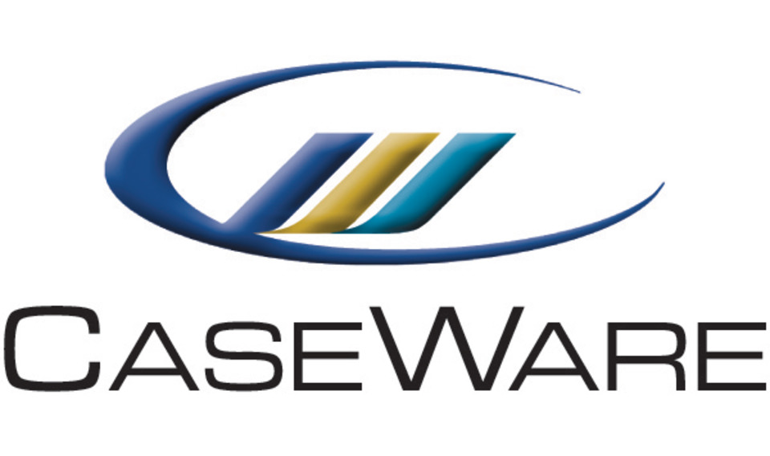

Caseware International Software Development

About the company
Caseware International Inc. is the leading software company of delivering internal audit products to various accountants and firms across the globe. The head office in Toronto was the cornerstone of all of the products and their development, including engagement automation, data analysis and internal audit workflows.
Job Description
When I first arrived to Caseware, the first thing that happened was that I was informed that my team was actually no longer a team. You could imagine, my first thought was that I was going to be asked to pack my bag and go home. But, to my surprise, they had a team on the web application called Caseware Cloud that would be a perfect fit for me. On this team I was using front end frameworks such as Angular and Typescript to develop dynamic component libraries that would be used all around the app. I was also responsible for writing component unit tests and took part in design meetings to plan the layout and structure of new features to further development of the application. In Caseware Cloud there are separate squads that are responsible for various areas on the web application. I was placed on the Tactical Squad whose main focus was on miscellaneous bugs and features all over the application. However, when I joined the squad, they were in progress working on a newer version of the already established query feature called eQuery, which allows for firms and clients to communicate various forms, files and agreements all within our application. This would eliminate the risk of data being lost in emails or in third party software. My team first introduced me to the environment by getting me started with some issues that were very easy and intuitive. I quickly grew more comfortable and took on harder bugs and full features to myself. Nearing the end of my internship I was implementing a library that would be used to track analytics and user stories within Caseware Cloud. I then began to collaborate with server squad and dev ops to complete stories that could affect other squads. The increased responsibility that they gave me was very rewarding.
Work Term Goals (May - August)
My first and in my opinion, my most important goal for this term was not to be afraid to ask for help when I needed it. If you were to know me personally then you would know how stubborn I can be to solve a problem on my own. I guess it is a blessing and a curse to do everything in my power to figure out a problem before asking for help. I quickly realized that this is not always the best way to work, especially when working with such a large code base with little to no knowledge on how the product actually works. When asking my more experienced team mates for help I was able to access knowledge much easier and quicker. This resulted in me learning more effectively and being able to push out software on time and within our weekly sprints. Lesson learned, I can’t do everything myself (unfortunately).
My second goal was actually to be more involved with company culture and socials. During my first months at Caseware I never really participated in the monthly company socials. These socials allowed for all employees to get together and have a good time after working hours. Food, drinks and board games were provided for free at the expense of the company. However, due to my living circumstances (living in Kitchener/Waterloo), I decided to take an earlier train back home to prevent me from getting home at 9pm and then waking up at 6 am the next day to repeat a dreadful, draining process. In my last months I made the sacrifice to come to the socials and it was definitely worth it! I feel as if I made connections with my co-workers that will last a lifetime.
My final goal for this term was to increase the amount I was contributing to team discussions. I guess you could say my true goal was to learn more about the actual product that we were working on, since meetings required that knowledge to offer an opinion, but I felt as if I could have offered more opinions and insights when refining new bugs and features. The way I could have done this is to ask a question if something doesn’t make sense or if I am unsure about the direction of the conversation. Doing this could have shown more intuition and initiative.
Work Term Goals (September - December)
My first learning goal for this work term was to get more involved with my oral communication skills and having more face to face conversation with my coworkers. Conversation is made fairly easy at Caseware. We use an IM software called Slack which you can us to come into contact with anyone in the company within the click of a few buttons. This is effective for short quick questions but when it comes to more complicated questions, which in return should have a more complicated response this is not the best way (in my opinion). It would be a lot more effective to have a meeting or to find someone at their desk to discuss the issue at hand. Luckily, Caseware makes it fairly easy to book meetings in any of the meeting rooms throughout the day (when the rooms are available). I slowly began to book quick meetings whenever there was a major task at hand. Figuring out the Google calendar application was fairly easy to do, I just needed to take more initiative on the matter at hand and to not be afraid to do it, which proved to be useful and to save a lot of time.
My second learning goal was to thoroughly check over my commit tree before pushing code to a pull request. When working with a lot of different files for a feature or bug, it is easy to commit code that you use for your personal debugging. Even to commit code that does not follow company standard to the full extent, such as variable names, spacing between functions etc. This results in longer pull requests and reducing the amount of software that our team can get out for the sprint. Also, it takes valuable development time away from the other developers. It is hard for developers to put down the things that they are currently working on to review someone else's code, only find out you left a print statement in the code. The way I prevented this was to use graphical version control programs such as Git Gui or SourceTree to preview content of all files before committing. Using these tools I was able to see at a quick glance if I was about to push code that should have been cleaned or deleted before making the push. Ultimately, this eliminated commits with garbage code.
My final learning goal for this work term was to continue to broaden my understanding of Angular and Typescript. During the end of the work term, the Caseware Cloud teams began a weekly technical demo, where all developers got together and demoed some new feature or discovery of frameworks or language syntax that they were using. These demos allowed the demonstration to how powerful typing can be in Typescript and why it is a necessity, to show how we can set up a proxy to run our code faster without compilation. This really made me realize how much I really didn’t know as a whole. These demos inspired me to always look into these things and to keep up to date with the latest updates and technologies that are available to us. The field of Software is always changing and it is very easy to become obsolete. That is one thing I like about Computer Science, it is a never ending journey of the pursuit of knowledge.
Acknowledgments
I wanted to give a hats off to some of the people I have met during my 8 months at Caseware. First of all, I would like to acknowledge Reece Goddard. Reece was the one who first gave me the interview and hired me for the position. Thanks to Reece’s efforts, when my position was changed I was placed on a team in which my skills could shine and where there was room to learn and grow as a developer. If it weren’t for him, I might have been sent home that day they told me my team was deprecated. I would also like to acknowledge my product owner Shun Chen. Shun was super helpful in showing me the ins and outs of our product, as well as easing me into the team and making me feel like an important part of the team right off the bat, which definitely improved my working performance. For my fellow developers, I would like to thank Kyle Good and Jonnathan Zauritz for helping me through the code base and giving me tips on how to solve the bugs and conflicts that I faced. The most important part about this was that they never really gave me an answer. Instead, they guided me in the right direction to ensure that I would learn something in the process. They really forced me to think like a real developer. My team was super helpful in assisting me to become successful during these 8 months, definitely a place where I could see myself working full time.
Conclusion
My experience at Caseware was extremely positive. The skills that I have acquired and the connections I have made will surely last a lifetime. I want to thank the University of Guelph Coop program and Caseware for making this possible. I am truly excited to see where my next coop experience will bring me.